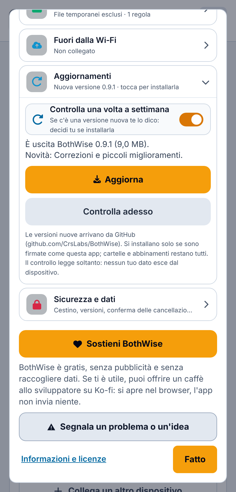
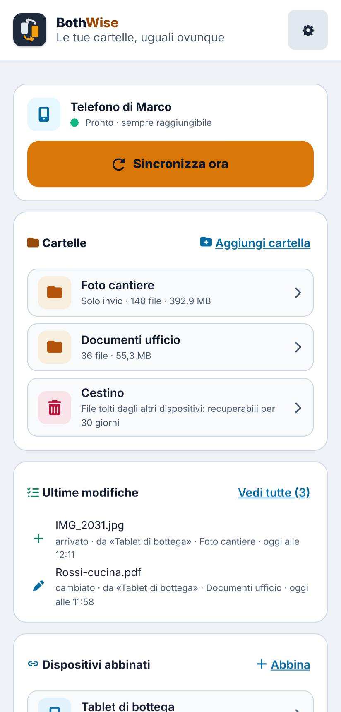
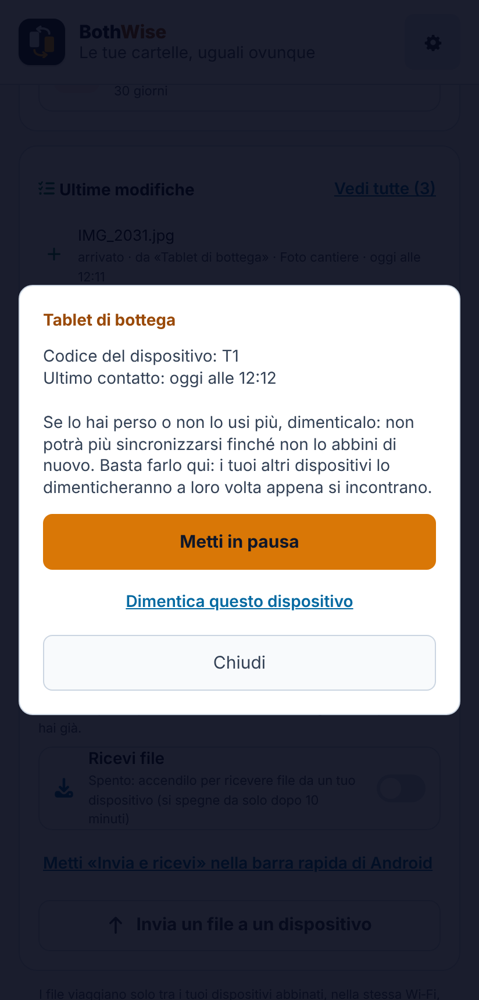
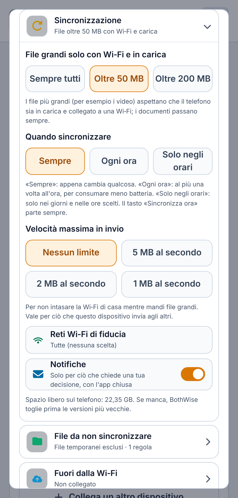
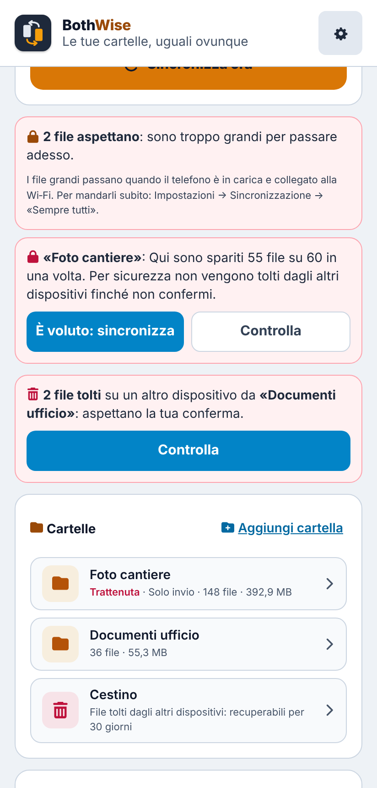
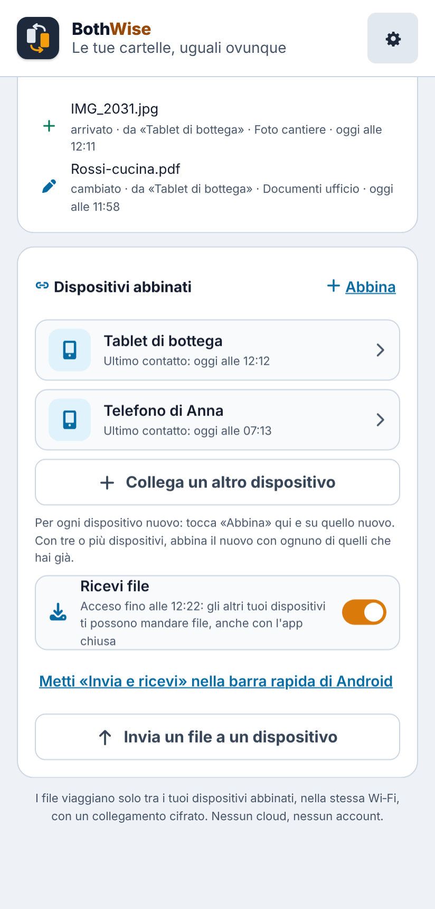
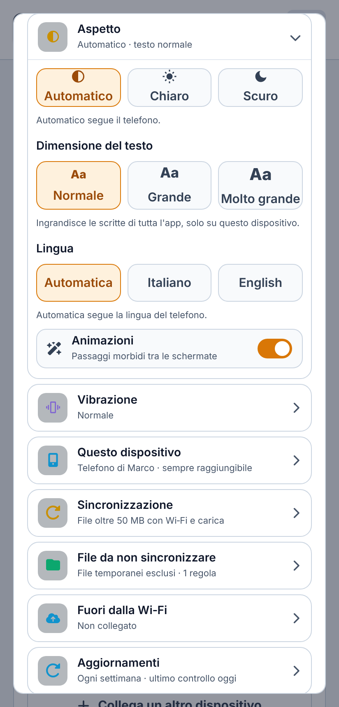
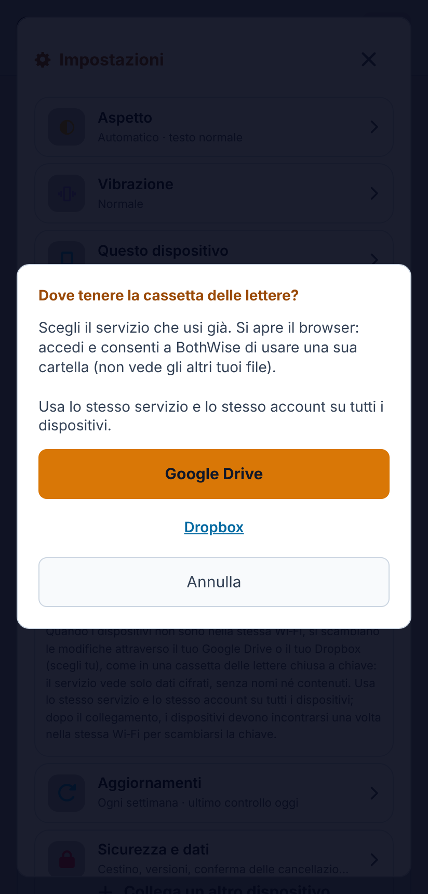

BothWise
Le tue cartelle, uguali ovunque
Tutorial
Come si fa, passo per passo: una scheda per ogni cosa
Versione dell'app {{VERSIONE}} · aggiornato il {{DATA}}
La prima volta, su ogni telefono o tablet (Android 10 o più recente).

Quando esce una versione nuova (BothWise controlla da sola una volta a settimana).

Serve una volta sola per ogni coppia. Entrambi nella stessa Wi‑Fi, con BothWise aperta.
Hai già due dispositivi abbinati.

Per un tablet o un telefono lasciato acceso, che deve ricevere anche a schermo spento.

Vuoi vedere cosa c'è dentro senza aprire un'altra app.
Dalla lista dei file di una cartella.
Per mettere file nella cartella sincronizzata.

Scegli la cartella da tenere uguale sugli altri dispositivi.
Un altro dispositivo ti propone una cartella.

Per decidere in che direzione viaggiano i file.
Per copiare sul tablet le foto che scatti.

Per fermare per un po' una cartella o un dispositivo.
I file restano dove sono.
Per consumare meno batteria o non rallentare la Wi‑Fi nelle ore di lavoro.
Quando mandi file grandi e non vuoi intasare la Wi‑Fi di casa.
Di solito è automatica; così forzi un giro.

Un file grande occupa la rete.

Compare «N file aspettano» in Home.
Per non sincronizzare nelle Wi‑Fi degli ospiti.
Da Galleria, File, WhatsApp…
Lo stesso file è stato cambiato su due dispositivi insieme: restano tutte e due.

Un file è sparito perché tolto da un altro dispositivo.

Un file è stato cambiato altrove e vuoi com'era.

Per decidere tu cosa togliere.
Compare un riquadro in Home.

Per escludere video, file temporanei, ecc.

Un tuo dispositivo vuole mandarti un file e BothWise è chiusa.
Per ricevere e mandare file con un solo tocco da qualsiasi schermata.
Un file che serve una volta, non una cartella da tenere uguale.
Telefono rubato, perso o venduto.

Per proteggere l'app.
Prima di venderlo o regalarlo.
L'app segue la lingua del telefono; puoi sceglierla tu.

Per adattare l'app.
Per scriverci.

Quando i dispositivi non sono nella stessa Wi‑Fi (casa e cantiere, ufficio e viaggio).

Se l'app ti è utile.